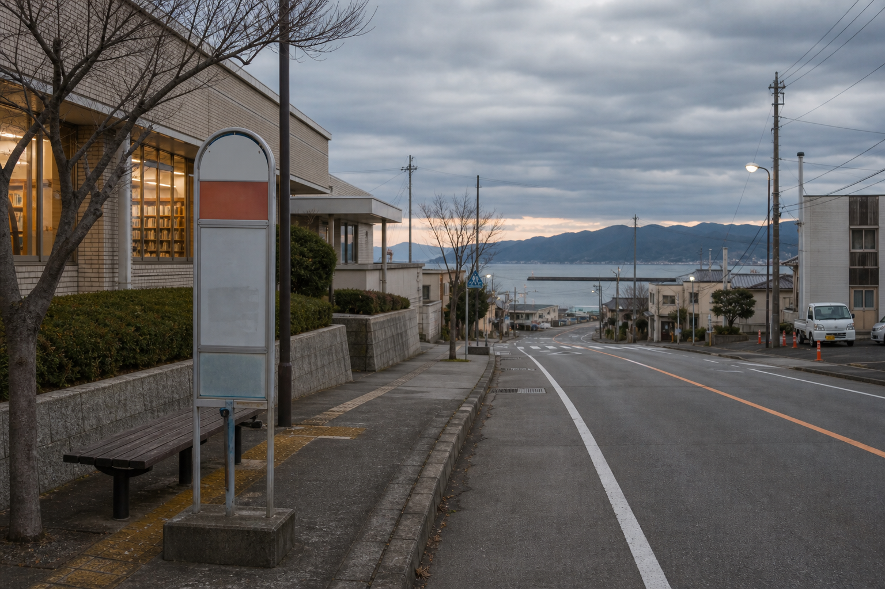

港湾経由便のお知らせ
未明駅、図書館前、港湾広場、第二倉庫前を結ぶ港湾線の保存ページです。2006年9月分の臨時運行情報を含みます。
9月17日の手書き引継ぎには、図書館前19:03発の便に「港ではなく旧資料館坂で降車希望」とあります。
Mimei Bus Service

未明駅、図書館前、港湾広場、第二倉庫前を結ぶ港湾線の保存ページです。2006年9月分の臨時運行情報を含みます。
9月17日の手書き引継ぎには、図書館前19:03発の便に「港ではなく旧資料館坂で降車希望」とあります。